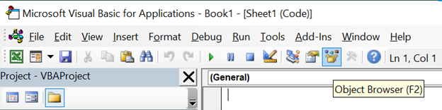
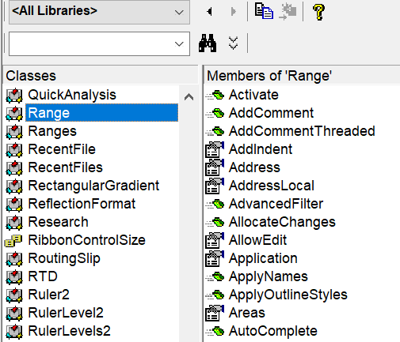
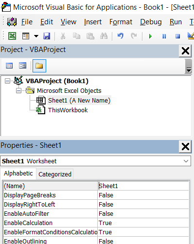

Computing involves functions and processes acting upon many underlying layers of functions and processes. Objects group specific functions and processes together, such that there are pre-defined relationships.
Properties are the attributes of an object, such as size, color, or contents. Methods are actions which may be executed against a given object or it's properties, such as copy, paste, or delete.
Consider the analogy of a car. Properties include attributes like size and color, make and model, how old it is, and how many miles. Methods, on the other hand, would include actions such as start, accelerate, turn, and brake.
Why am I telling you all this? Well, objects are important because they provide structure, and that structure enables capabilities which make it easy to identify the command or syntax that you are looking for. For example, by using a tool like the 'Object Browser', which is covered below.
'Intellisense' lists of available commands that appear while you are typing, only do so because of specific associations. If there were no objects, there would be no associations, and any list to prompt your next command would be overloaded, and almost entirely redundant.
Furthermore, object-oriented programming means that you can refer to your variables as objects; more directly than by name, which is a property. This has several advantages, including Intellisense dropdowns after you type the name of your variable; and also faster processing. Variables are the topic of an upcoming section.
Objects are hierarchical – for example, there is the hierarchy of Application > Workbook > Worksheet > Range > Cell
The property of one object can be an object in itself, with its own associated methods and properties.
To reference a child object through its parent object, the two are separated by a period, such as Workbooks(1).Worksheets(“Sheet1”).Range("a1")
Organizing functions as objects provides a natural way to structure the efficient indexing and lookup of capabilities. The Object Browser is a feature of the VBA editor that lets you search classes (objects) and their members (methods and properties). From within the VBA editor, press F2 or click on the button shown below in order to bring the Object Browser up.

In the left pane of what comes up, the classes are listed. This includes things like Workbook, Worksheet, Range, Autofilter, PivotTable, etc. Select any class object and the methods and properties will be displayed in the right pane. This helps to clarify what you would use and how you would use it in order to accomplish specific objectives, whenever it is not immediately obvious. Above the left pane is a search box for the classes.

When you are ready to close it, use the small X next to the larger X in the top-right corner.
Worksheets can be referred to by name, or by number (i.e., the left-to right index of position). They can also be referred to using "Sheets", rather than "Worksheets". To refer to a sheet by name, put it in between brackets and quotation marks, such as Sheets("MySheetName").Select
Referring to it by index-number would look like Sheets(1).Select, perhaps using a different number.
The ActiveSheet object is something that comes in handy in various situations, such as naming a newly created sheet, as it becomes the active sheet. Using it to create and then rename a sheet would look something like:
Sheets.Add
ActiveSheet.Name = "MyNewSheet"
You can also refer to a sheet more directly, by it's code-name. The code name will not necessarily be the same as the text name, especially if the sheet has been renamed in the worksheet environment.
The code name is displayed in the Properties Explorer (which you can access from the VB Editor). In the below example, I have changed the name of the sheet originally named "Sheet1" to "A New Name"; but in the Properties Explorer, it still shows "Sheet1", because the underlying code-name has not been changed. Above that, in the Project Explorer, you can see that each sheet displays its text-name in brackets, next to the code name.

Code names are editable, but may not contain spaces. To refer to a sheet by it's code name, drop the brackets and quotation marks, such as:
Sheet1.Select
And if it is recognized, Intellisense suggestions for other commands will appear following your typing of the period.
When referring to an object, such as a workbook, worksheet, or range of cells, Excel assumes you are referring to the active workbook and worksheet, unless otherwise specified. Assigning equivalence from a cell on a different sheet than selected could look something like this:
Range("A1").Value = Sheets("MyData").Range("B2").Value
Because of the ability to run actions against an inactive or non-selected worksheet, the Select command is typically unnecessary, unless for display purposes. Avoiding Select when unnecessary will help keep code lean, and boost the execution speed.
Workbooks, like worksheets, may be referenced either by name or by number, and in the same syntax, such as Workbooks("MyWorkbook").Activate, or Workbooks(3).Activate, with the number referring to the order in which it was opened. For workbooks, you must use the method 'Activate' to set focus.
| Method: | Activate |
|---|---|
| Purpose: | Like Select for worksheets, Activate has the effect of making a particular workbook the object of focus, and has no optional arguments |
| Syntax & Parameters: | expression.Activate |
| Examples: | |
| Method: | Save |
|---|---|
| Purpose: | Save will save the referenced workbook using the current filename, and has no optional arguments |
| Syntax & Parameters: | expression.Save |
| Examples: | |
| Method: | SaveAs |
|---|---|
| Purpose: | SaveAs will save the open workbook which is referenced, using a specified filename |
| Syntax & Parameters: | expression.SaveAs (FileName, FileFormat, Password, WriteResPassword, ReadOnlyRecommended, CreateBackup, AccessMode, ConflictResolution, AddToMru, TextCodepage, TextVisualLayout, Local) |
| Definitions: | FileName: mandatory, the name the workbook is to be saved with |
| FileFormat: the type of file that the workbook is to be saved as (alternatively, you may | |
| specify its extension in the filename) | |
| Password: a password that will be required in order to open the file | |
| WriteResPassword: a password that will be required in order to edit the file | |
| Examples: | |
| Method: | Close |
|---|---|
| Purpose: | Close will close the open workbook which is referenced |
| Syntax & Parameters: | expression.Close (SaveChanges, FileName, RouteWorkbook) |
| Definitions: | SaveChanges: whether to overwrite file of same name if exists |
| FileName: the name the workbook is to be saved with | |
| Examples: | |
| Method: | Protect |
|---|---|
| Purpose: | Protects a workbook so that it cannot be modified |
| Syntax & Parameters: | ActiveWorkbook.Protect(Password, Structure, Windows) |
| Definitions: | Password: password for the workbook |
| Structure: True to protect the structure of the workbook | |
| Windows: True to protect the workbook windows | |
| Examples: |
| Property: | Name |
|---|---|
| Purpose: | Refers to the text name that a workbook is given |
| Syntax | Workbooks("Name").Method |
| Examples: | Workbooks("MyWbName.xlsx").SaveAs Filename:="New Name.xlsx" |
| Workbooks("MyWbName.xlsx").Close SaveChanges:=vbYes | |
| Workbooks("MyWbName.xlsx").Sheets.Count | |
| | |
| | |
| | |
| Property: | FullName and Path |
|---|---|
| Purpose: | FullName refers to the entire file name, including directories |
| Path refers to the entire file name minus the workbook name | |
| Syntax | Workbooks("FullName").Method |
| Examples: | |
| | |
| | |
| | |
| Method: | Add |
|---|---|
| Purpose: | Creates a new worksheet |
| Syntax & Parameters: | Sheets.Add(Before, After, Count, Type) |
| Examples: | |
| Method: | Copy |
|---|---|
| Purpose: | Copy creates a duplicate of the desired worksheet, and lets you assign it's left-to-right position index |
| Without specifying a 'before' or 'after' position, it will create a new workbook, containing the sheet copied | |
| Syntax & Parameters: | Worksheets("MyCharts").Copy After:=Worksheets("MyData") |
| Sheets("MyCharts").Copy After:=Sheets("MyData") | |
| Examples: | |
| Method: | Delete |
|---|---|
| Purpose: | Delete will eliminate the referenced sheet. It will also generate an alert, asking the user whether they are sure, however there ways to suppress this. |
| Syntax & Parameters: | Sheets("MyJunkSheet").Delete |
| Examples: | |
| | |
| | |
| | |
| | |
| | |
| Method: | Copy |
|---|---|
| Purpose: | Moves the position of the desired worksheet |
| Without specifying a 'before' or 'after' position, it will move the sheet to a new workbook | |
| Syntax & Parameters: | Worksheets("Name").Move Before:=Sheets(1) |
| Sheets("MyCharts").Move After:=Sheets("MyData") | |
| Examples: | |
| Method: | Protect |
|---|---|
| Purpose: | Protects a worksheet so that it cannot be modified |
| Syntax & Parameters: | expression.Protect (Password, DrawingObjects, Contents, Scenarios, UserInterfaceOnly, AllowFormattingCells, AllowFormattingColumns, AllowFormattingRows, AllowInsertingColumns, AllowInsertingRows, AllowInsertingHyperlinks, AllowDeletingColumns, AllowDeletingRows, AllowSorting, AllowFiltering, AllowUsingPivotTables) |
| Definitions: | Password: password for the worksheet |
| Other arguments can be set to True or False | |
| Examples: |
| Method: | Select |
|---|---|
| Purpose: | Select has the effect of making a particular Sheet the one of focus, and has no optional arguments |
| Syntax & Parameters: | expression.Select |
| Examples: | |
| Property: | Index |
|---|---|
| Purpose: | Refers to the position of a worksheet, from left to right |
| Syntax | Sheets(Index).Method |
| Examples: | |
| Property: | Name |
|---|---|
| Purpose: | Refers to the text name that a worksheet is given |
| Not to be confused with the code name, asccessible in the Properties Explorer | |
| Syntax | Sheets("Name").Method |
| Examples: | |
| Property: | Visible |
|---|---|
| Purpose: | Refers to whether a sheet is visible rather than hidden |
| Accepts | |
| Syntax | Sheets("Name").Visible = True |
| Examples: | |
| | |